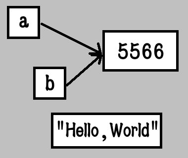

陣列與雜湊
林品儒
2016/10/14
本日重點
物件與參考
陣列
符號
雜湊
物件與參考
物件
Ruby的基本單位
實際存在記憶體中的資料
可以對其進行相對應的操作
變數
使用參考來指定對應的物件
有可能兩者指向同一個物件
需要注意操作是否改變物件本身
參考
英文為reference
讓變數或其他物件可以連結到某物件
"代表"某個存在的物件
圖解
a=b=5566
"Hello,World"
小結
小心兩個變數指向同一個物件的狀況
一個變數只能參考到一個物件
沒有被參考的物件又是另一個故事了
陣列
陣列
Array
注意是陣列不是矩陣(Matrix)
裏面可以裝入任意物件
用途
用來放有順序相關的資料
或是當一個集合來使用
也可以當作有秩序的序列容器
陣列表達
使用中括號可以表達一個陣列
["a","b",nil,3,[true,false]]
記得元素中間要使用逗號隔開
字串陣列
大家應該還記得神奇的"%"號表達法
可以用來表達裝了字串的陣列
使用%W(有竄寫)和%w(無竄寫)
牛刀小試
在陣列裡放入1~10的數字
%W[x#{1+1} y3 z4]
%w[x#{1+1} y3 z4]
陣列的內部設計
ary=[100,"cat",nil,"cat",true]

注意裏面的兩隻貓是不同隻貓
陣列處理
把陣列當不同用途有不同的操作方法
意義上不要把陣列的操作混用
例如說集合就不需要將元素洗牌
[]
又是這個中括號了
一樣可以取用索引值的資料
其實還有更深的用法請自行查閱
[]=
用來指派陣列某索引位置的元素
可以超出陣列原先的範圍
!!注意!!注意陣列的索引數值大小
牛刀小試
來看看物件的參考會有什麼影響
a=[1,2,3,4]
b=a
b[1]=100
結果a也被影響了
陣列長度
Ruby的陣列是知道自己長度的
使用size或length取得長度
殺雞
體驗記憶體爆炸的快感
ary=[]
ary[100_000_000]=0xC8763
ary[100_000_000]
ary.size
ary[1e12]=8787
集合操作
集合處理
可以將陣列當作數學上的集合
內部順序不重要
多個相同元素視為一個
可以有兩集合間的操作
集合運算
"&"號可以對兩陣列取交集
"|"號可以對兩陣列取聯集
"-"號對兩陣列取差集
注意取聯集和兩陣列相加是不完全相同的
牛刀小試
set = [1,2,3,4,5]
set & [3,5,8]
set | [5,6,7]
set - [1,2,4,9]
最後發現set不會被改變
想要存下結果?
要記得把運算結果指派給變數
也可以指派回原本的變數
set=set | [0,2,7]
或是對於指派自身用符號的都可以縮寫
set &= [1,4]
串列結構
只能用特定方式取得或存入數據的資料結構
可以使用陣列來表示這種結構
堆疊,佇列,雙向佇列
本課不是資料結構所以只講操作
串列操作
pop:取得並刪除陣列末端的元素
push:將指定的元素放入陣列末端
shift:取得並去除陣列開頭的元素
unshif:將指定元素放入陣列開頭
牛刀小試
list=[1,2,3,4]
list.pop
list.push 5
list.shift
list.unshift 0
一般用途
陣列相加
使用"+"號得到兩者元素串接的新陣列
使用concat(x)則會把自身和陣列x串接
就算陣列裏面有重複的元素也不管
檢測元素
count(x)可以計算陣列內部某元素x出現的次數
include?(x)能看某元素x是否包含在陣列中
empty?看是否為空陣列
index(x)可以看傳入的物件x在哪個位置
牛刀小試
ary=[1,2,3,4,4]
ary.count 4
ary.include? 5
ary.empty?
ary.index(4)
刪除元素
注意有"!"的方法就有相對安全的方法
uniq!可以去除陣列中重複的元素
compact!可以刪除陣列中的nil
delete(x)可以去除陣列中指定的元素x
delete_at(n)刪除索引n所在的元素
牛刀小試
觀察每一個步驟的ary
ary=[5,6,7,nil,nil,8]
ary.uniq!
ary.delete 7
ary.delete_at 1
ary.compact!
順序相關操作
reverse!可以反轉陣列
shuffle!可以將陣列元素洗牌
sort!可以排序內部元素
陣列取樣
take(n)可以得知陣列開頭的n個元素
sample(n)可以隨機挑選n個元素組成新陣列
sample省略參數則隨便取一
牛刀小試
ary=[0,2,7,7,3,4,6,6,5,9]
ary.sort!
ary.reverse!
ary.sample(4)
ary.shuffle!
ary.take(4)
陣列小結
以上方法可以達到大部份之處理
其實還有針對各個元素處理的方法
此類方法眾多待日後課程說明
符號
符號
Symbol
Ruby中特殊的物件
同樣的符號在記憶體中是指同一個物件
!!注意!!一樣的字串不一定是一樣的物件
內部設計
輸入一個符號之後直譯器會尋找是否已經存在
沒有的話就建立一個新的符號
有的話就使用原來的符號
用途
因為物件不存在其他與之相同的物件
用來做雜湊的查詢
直譯器內部運作
符號表達
使用":"加在字串前
:"Only One"
使用":"後接符合變數或常數命名法的文字
:NTNUCIC,:bad_apple
牛刀小試
"Hello, World"
Symbol.all_symbols
:"Hello, World"
:C8763
Symbol.all_symbols
注意字串和符號是不一樣的歐
雜湊
雜湊
Hash
用來存放鍵(key)值(value)配對的容器
C++的Map,Java的Dictionary,JS的Object
使用雜湊函數存取映射在表格中的數據
用途
可以使用非整數的索引來查詢資料
以類似於命名的方式來存放有相關的資料
表達方式
使用"{}"大括號包住 鍵"=>"值 的配對
{"name"=>"L5640","core"=>6,"thread"=>12}
鍵和值可以為任意物件
{nil=>8,0=>false,"true"=true}
和符號搭配使用
雜湊是利用雜湊函式查詢鍵所對應的值
使用字串當作鍵時需要"計算"雜湊值
使用符號則不需要計算
同時也可以漸少記憶體浪費
符號作為鍵
原本的寫法一樣可行
{:name=>"E5-2699v4",:core=>22,:thread=>44}
可以將其縮寫
{name:"E3-1231v3",core:4,thread:8}
牛刀小試
出現了野生的CPU
叫作 I7-6950X
有10顆核心(core)
還有20個執行緒(thread)
快裝進雜湊帶回家
雜湊處理
雜湊的玩法變化就比陣列少很多了
在此還是講解簡單的操作
[]
以鍵來查詢雜湊中的值
沒有該值則會回傳預設值
預設值
雜湊的預設值是nil
可以對雜湊使用default方法得知
也可以用default=來設定預設值
[]=
將鍵和值的配對存入雜湊
可以把舊的值蓋掉
牛刀小試
取出剛才CPU的核心數
將CPU雜湊的預設值變成0
以:price為鍵查詢該雜湊對應之值
刪除配對
使用delete(x)來刪除鍵x與其值的配對
將對應值設定成nil不會刪除配對
取得所有的鍵和值
keys方法可以得到該陣列所有的鍵
values方法可以得到該陣列所有的值
別問我如何取得所有的配對...
檢查鍵或值是否存在
has_key?(k)可以看鍵k是否存在鍵中
has_value?(v)可以看看值v是否存在值中
merge!
可以將兩個雜湊合併
一樣有安全版本的可以回傳新雜湊
這次沒有"+"號可以用歐~~
翻轉!!
有時候想要把雜湊的鍵和值反轉
使用invert可以得到配對反轉的雜湊
牛刀小試
hash={"a"=>1,"b"=>2,"c"=>3}
hash["d"]=4
hash.has_key?("d")
hash=hash.invert
hash.has_key?(4)
hash.has_value?(4)